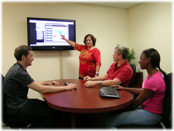

Designing platforms for interactive user experience
From websites to multimedia marketing, we strive to educate and inform by using the most engaging techniques possible. We assemble a creative team of writers, editors, graphic designers, and web developers to build solutions that are elegant, simple, and powerful. Our web designs are carefully constructed according to web standards, with an emphasis on usability and accessibility.